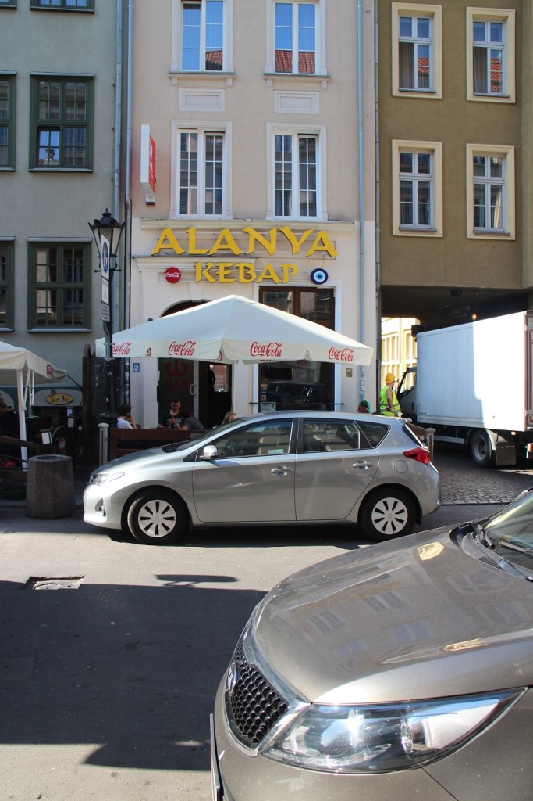

Baltık Denizi'ne Dokunmak : Gdańsk
Gdańsk ile ilgili aklımda kalan notlar :
- Gdańsk'a Berlin'den FlixBus kullanarak 10euro ya geldik. Akşam saat 21:00 de bindik ve sabah 6'da Gdańsk'taydık.
- Otobüs terminaline gelir gelmez ilk ihtiyaç olarak tuvalet aradık fakat, tuvaletlerin çalışma saati olduğunu görünce hayal kırıklığına uğradık. (Saat 9-5 çalışan tuvalet mi olur :P)
- Şehrin belirli kesiminde (terminal civarı) İngilizce bilen kişi sayısı neredeyse yok.
- Ülke Avrupa Birliği'nde olmasına rağmen para birimi zloti, biz nasılsa euro da geçer diye düşündük fakat döviz büroları açılana kadar aç açıkta kaldık. Bu nedenle size önerim yolunuz düşer ise mutlaka önceden paranızın bir kısmını zloti ye çevirerek gidin.
- Almanya'da olduğu gibi Gdańsk'ta da günlük bilet almak oldukça uyguna geliyor. Ayrıca gezilebilecek noktalar birbirinden uzak olduğu için yürümek çok da kolay değil. Günlük bilet fiyatı 13 zloti ve trenlerde bilet kontrolü yapılıyor.
- Türklerin olmadığı yer yok derler ya çok doğru, şehirde bir çok dönerci bulmanız mümkün.

- En çok hoşumuza giden mekan ise Spaghetti Bar NIKO oldu. Hemen ayak üstü çeşit çeşit ve ucuz makarna yiyebileceğiniz bir mekan.
- Şehre gidenlere gezmek için özellikle tavsiye edilen iki lokasyon var : Sopot ve Old Town bölgesi, ikisi de oldukça turistik ve görülmeye değer.
- Sopot Baltık Denizi'ne sıfır oldukça turistik bir yerleşim yeri ve burada hemen hemen herkes İngilizce'yi oldukça iyi konuşabiliyor.
- Old Town'da ise müzeler, katedraller ve tarihi binalar var ve oldukça kalabalık bir bölge. Buradan çeşitli tur tekneleri ile Sopot'a gidebilirsiniz. Ayrıca şehrin girişinde Amber toplayabileceğiniz bir havuz var, tabi ki de ben bunu öğrenir öğrenmez başladım toplamaya. Belki amber satışından köşeyi dönerim dedim ama elim o soğuk suya çok da dayanamadı.
- Gdańsk ta en zorlandığım şey durak isimlerini telefuz etmek oldu. Adamların 10 harflik bir kelimelerinde 2 sesli harf ya var ya yok. Bu nedenle şuraya nasıl giderim gibi bir soru yöneltemiyorsunuz. Onun yerine haritadan parmakla göstererek soru sorabiliyorsunuz.
- Genel olarak Gdańsk oldukça güzel bir şehir bir kere görmek için gitmeye değer bir yer, ama defalarca gidip altını üstüne de getirmeye gerek olacağını düşündüğüm bir şehir değil!